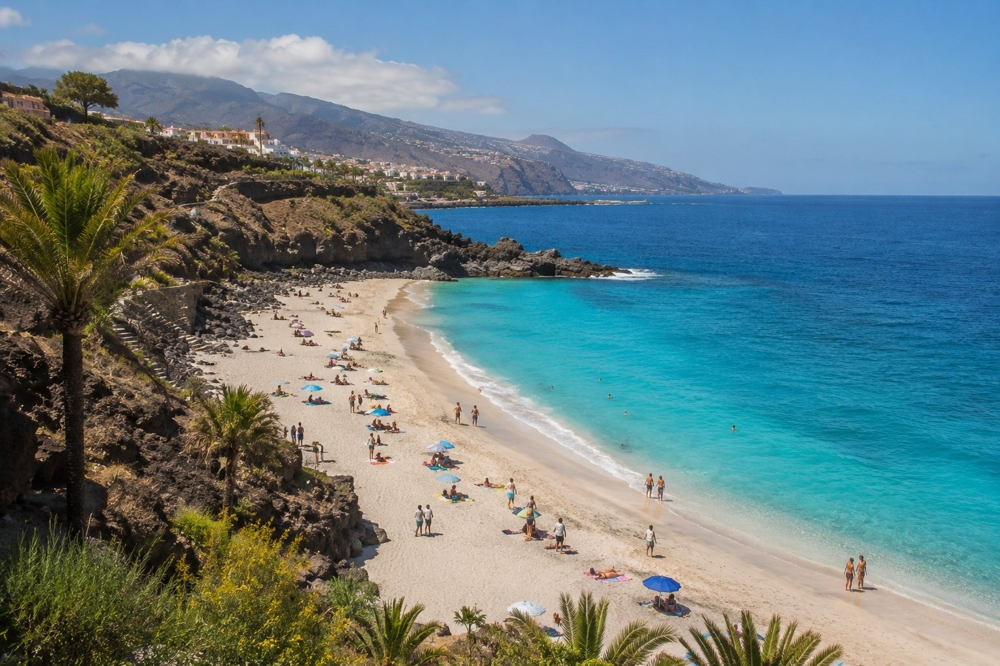

1
Redo för publicering
Hög prio · 260
Strand
teneriffa
Har Teneriffa vita stränder?
bilder/web-ready/teneriffa/har-teneriffa-vita-strander-teneriffa.jpg
bilder/web-ready/teneriffa/redo/har-teneriffa-vita-strander-teneriffa.jpg
Prompt
Publishing metadata
- Prioritet
- Hög (260) · bas 10 | huvudmeny-sida +70 | matchar sidtitel/H1 +80 | matchar H2-sektion +55
- Alt
- Har Teneriffa vita stränder? i Teneriffa med människor och realistisk resemiljö
- Caption
- Har Teneriffa vita stränder? i Teneriffa
- SEO
- En realistisk resebild från Har Teneriffa vita stränder? i Teneriffa. Bilden visar Har Teneriffa vita stränder? i Teneriffa under relevant resesäsong med naturligt folkliv och tydliga platsdetaljer som gör reseguideavsnittet mer visuellt trovärdigt.
- Target
- https://teneriffa.se/basta-stranderna-pa-teneriffa/ / har-teneriffa-vita-strander